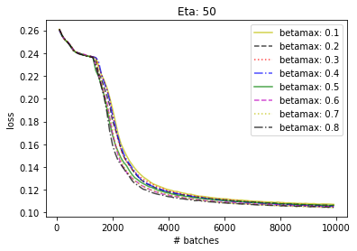
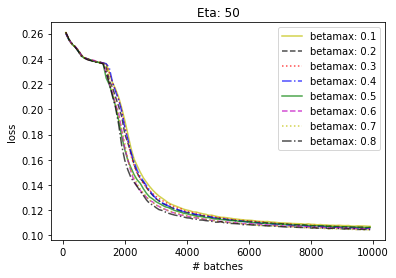
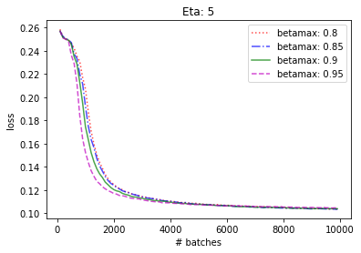
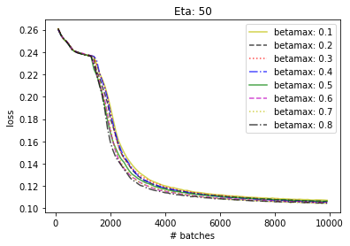

Tuning \(\eta\) and \(\beta_{max}\)
To investigate the effects of different \(\eta\) and \(\beta_{max}\) values,
a grid search with \(\eta = [5, 10, 15, ..., 50]\) and \(\beta_{max} = [0.1, 0.2, ..., 0.8]\) was performed.
In the following, each figure shows the validation set performance for a fixed value of \(\eta\) and
varying values of \(\beta_{max}\):
 

Higher values of \(\eta\) show less variation, which is explained by
a higher sensitivity to \(\beta_{max}\) when \(\eta\) is low.
In every figure, \(0.8\), the highest value for \(\beta_{max}\) shows the
best performance.
Thus, in the following we compare varying \(\eta\)s for \(\beta_{max} = 0.8\):
Clearly, the combination of \(\eta = 5 \), \(\beta_{max}=0.8\) emerges as
the winner in this setting.
A direct comparison between the models used so far, a standard autoencoder without
feedback and a feedback autoencoder with \(\eta = 20 \), \(\beta_{max}=\frac{2}{3}\) is
depicted below:
Extrapolating from the result recorded here, we might suspect that increasing
\(\beta_{max}\) and decreasing \(\eta\) further could lead to further improvements in performance.
A second grid search with \(\eta = [1, 2, 3, 4, 5], \beta_{max} = [0.8, 0.85, 0.9, 0.95]\) is performed to investigate this:

Indeed, further increasing \(\beta_{max}\) improves performance. However, the same cannot
be said for \(\eta\):
